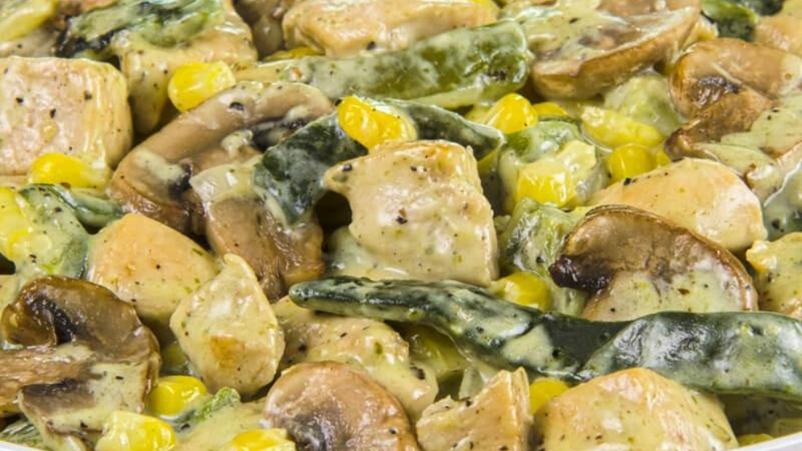

La cocina mexicana es muy deliciosa y versátil, gracias a la variedad de los chiles que existen en esta región. El chile poblano es uno de los más grandes protagonistas ya que, además de dar un buen sabor a la comida, también da color. Como es el caso del Pollo en Crema Poblana.

INGREDIENTES
PREPARACIÓN
INGREDIENTES
- -Chile poblano-5 piezas
- -Queso crema-1/2 barra
- -Crema ácida-1/2 taza
- -Cebolla 3/4 de pieza
- -Ajo-1 diente
- -Caldo de pollo-1/2 taza
- -Aceite-2cucharadas
- -Pechuga de pollo-1 pieza cocida
- -Granos de elote-1 taza
PREPARACIÓN
- -Para comenzar, asamos nuestros chiles por todos lados hasta que estén como quemados.
- -Una vez que los chiles estén asados, los envolvemos en una bolsa de plástico hasta que suden.
- -Cuando los chiles estén listos, les quitamos la piel, las venas y semillas. Reservamos.
- -Fileteamos media cebolla. El pollo lo deshebramos.
- -En el vaso de la licuadora, colocamos los chiles poblamos, la crema, el cilantro, el queso crema, el ajo, 1/4 de cebolla y el caldo de pollo. Licuamos todo y reservamos.
- -En un sartén calentamos aceite y después freímos la cebolla que fileteamos.
- -Freímos nuestra cebolla durante 5 minutos.
- -Pasado ese tiempo, agregamos el pollo deshebrado.
- -Mezclamos todo y también añadimos los granos de elote.
- -Rectificamos la sazón con sal y dejamos cocinar durante 10 minutos más.
- -Servimos y disfrutamos al gusto.